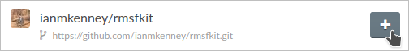

Part 5: Providing documentation
See our YouTube tutorial for a video demonstration of this section.
When registering an MDAKit, you’ll be asked to identify which of the following (or combination thereof) best describes your documentation (note that these are very flexible descriptions, and may cover a range of documentation styles and levels of detail):
README: a
README.md-type file containing basic information (description, installation, usage).API: ‘technical’ documentation, describing the functions/methods/etc and their input/outputs.
User Guide: more ‘user friendly’ documentation, similar to but likely expanding on README-style documentation; may include more detailed usage, descriptions, examples, etc.
To keep registration easily attainable, MDAKits require only minimal
documentation - e.g. only a README.md. However, more extensive
documentation is a good idea. We demonstrate here the process for adding further
documentation for rmsfkit.
Read the Docs can be used to build and host documentation online. The cookiecutter includes a Read the Docs configuration as well a pre-made documentation environment file that is used by Read the Docs and for building locally. Frameworks for autogenerated API and basic User Guide documentation are also provided.
Building documentation locally
You can build documentation locally to check on the appearance as you work on it.
First, add the required packages (listed in the autogenerated
requirements.yamlfile) to the environment:mamba env update --name rmsfkit -f requirements.yaml
Then the documentation HTML files can be built by running:
make htmlThis uses instructions in the included
Makefileto convert reStructuredText files in thesource/directory into HTML files in_build. These files can now be opened and viewed.
To view changes to the documentation after changing any of the source files,
rerun make html and refresh the browser.
Adding to the documentation
The cookiecutter-generated template
The cookiecutter starts our documentation with three pages:
index: a “home” page with a table of contents, but otherwise blank.getting_started: a blank page intended to contain information for potential users.API, containing API documentation autogenerated from the docstrings.
These files are written in reStructuredText syntax, and can now be added to expand the documentation.
Expanding the API documentation: for our
rmsfkitexample, the autogenerated API documentation does not currently contain all of the information found in the code docstrings. This is because the ‘autosummary’ insource/api.rstby default specifiesrmsfkit, rather than specifically the analysis class,rmsfkit.RMSF. We update it, soapi.rstnow reads:API Documentation ================= .. autosummary:: :toctree: autosummary rmsfkit.RMSF
After rerunning
make htmland refreshing, there will be a table entry for the RMSF class. Clicking this will open the documentation that was present in the docstrings.Updating the home page:
index.rstwill be the landing page for our User Guide. To make it more welcoming, let’s add a short desciption of our code:Welcome to rmsfkit's documentation! ========================================================= ``rmsfkit`` is an example MDAKit that implements the functionality of the `analysis.rms.RMSF` class within the MDAnalysis package. This MDAKit does not serve as a replacement for this functionality and using this MDAKit for real work is discouraged. .. toctree:: :maxdepth: 2 :caption: Contents: getting_started api Indices and tables ================== * :ref:`genindex` * :ref:`modindex` * :ref:`search`
Adding installation information: The
getting_startedpage is intended to provide information for users to get started with our code. Let’s add some installation instructions forrmsfkit:Getting Started =============== The ``rmsfkit`` package is installable from source. .. code-block:: bash git clone git@github.com:ianmkenney/rmsfkit.git cd rmsfkit/ pip install .
We could add more information here (or in additional pages) demonstrating usage; but as this is covered by the API documentation, we will stop here for now.
Citations in documentation
You can include citations in your docs using the bibtex format. We demonstrate
this below to fix an unformatted citation (:cite:p:`Welford1962`) in the
rmsfkit.RMSF class documentation.
We first create a bibtex file,
references.bibin thedoc/source/directory:@article{Welford1962, author = {B. P. Welford}, title = {Note on a Method for Calculating Corrected Sums of Squares and Products}, journal = {Technometrics}, volume = {4}, number = {3}, pages = {419-420}, year = {1962}, publisher = {Taylor & Francis}, doi = {10.1080/00401706.1962.10490022} }
In the confirguration file
conf.py, we need to add a new extension (sphinxcontrib.bibtex) as well as the name of the bibtex file:extensions = [ 'sphinx.ext.autosummary', 'sphinx.ext.autodoc', 'sphinx.ext.mathjax', 'sphinx.ext.viewcode', 'sphinx.ext.napoleon', 'sphinx.ext.intersphinx', 'sphinx.ext.extlinks', 'sphinxcontrib.bibtex', # add this line ] bibtex_bibfiles = ['references.bib'] # and this one!
We also have to add this extension the install requirements in
docs/requirements.yaml- add- sphinxcontrib-bibtexas an additional dependency here.Finally, update the environment with
mamba env update --name rmsfkit -f requirements.yaml
before once again running
make html.
Refreshing the documentation will now show a properly formatted citation using the information in the bibtex file.
Deploying the documentation
After pushing documentation changes to GitHub, you can then display them on their own shiny new website!
Make sure all changes are pushed to GitHub. Log into Read the Docs (using your GitHub account) and navigate to the dashboard - click the “Import a Project” button.

Find the Kit repository and click “+”. Confirm that the name, URL, and default branch (likely main) are correct.
Clicking next will begin the deployment. This immediately starts the build process, which can be confirmed by clicking the “Builds” tab. Once the build is completed, you can view the deployed documentation (which is now public!).
This completes the documentation requirement for an MDAKit! Notice that the “docs”
badge in the GitHub rendered README.md is now green.
Progress: MDAKit requirements
✓ Uses MDAnalysis
✓ Open source + OSI license
✓ Versioned + on a version-controlled repository
✓ Designated authors and maintainers
✓ (At least) minimal documentation - documentation is now included with the code and hosted online.
✓ (At least) minimal regression tests
✓ Installable as a standard package
✓ (Recommended) community information available
(Recommended) on a package distribution platform